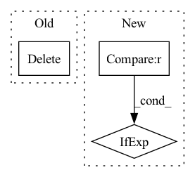

Pattern ID :20835
Before Change
if n in grp:
print(f"Found dataset {n}. Replacing.")
del grp[n]
ds = grp.create_dataset(n, data=data, **comp_kwargs)
ds.attrs["n_samples"] = audio.shape[-1]
After Change
for attr in fr.attrs:
fw.attrs[attr] = fr.attrs[attr]
codec = fr.attrs.get("codec", "pcm")
out_codec = sys.argv[3] if len(sys.argv) > 3 else codec
fw.attrs["codec"] = out_codec
comp_kwargs = {"compression": "gzip"} if codec == "pcm" else {}
for n, sample in fr[group].items(): // type: ignoreIn pattern: SUPERPATTERN
Frequency: 6
Non-data size: 3
Instances Fragment ID: 67214547
Project Name: rikorose/deepfilternet
Commit Name: e6cd8eadebc994b2b700693385406e30808daed9
Time: 2022-12-21
Author: h.schroeter@pm.me
File Name: DeepFilterNet/df/scripts/trim_silence_hdf5.py
M Class Name: AnonimousClass
N Class Name: AnonimousClass
M Method Name: main(1)
N Method Name: main(1)
M Parent Class:
N Parent Class:
M File Name: DeepFilterNet/df/scripts/trim_silence_hdf5.py
N File Name: DeepFilterNet/df/scripts/trim_silence_hdf5.py
M Start Line: 66
M End Line: 92
N Start Line: 62
N End Line: 96
Before Change
yield image_path
except:
print("An error occured, deleting model")
del self.model
torch.cuda.empty_cache()
self.setup()
raise Exception("There was an error, please try again")After Change
path = Path(tempfile.mkdtemp())
for image in image_stream:
i += 1
ext = "png" if i == 2 ** log2_mid_count else "jpg"
image_path = path / "min-dalle-iter-{}.{}".format(i, ext)
image.save(str(image_path))
yield image_path Fragment ID: 67214549
Project Name: kuprel/min-dalle
Commit Name: 51e401ea9bbb14ab59203eed68df34b0aa5f73e0
Time: 2022-07-12
Author: brkuprel@gmail.com
File Name: replicate_predictor.py
M Class Name: ReplicatePredictor
N Class Name: ReplicatePredictor
M Method Name: predict(7)
N Method Name: predict(7)
M Parent Class: BasePredictor
N Parent Class: BasePredictor
M File Name: replicate_predictor.py
N File Name: replicate_predictor.py
M Start Line: 23
M End Line: 47
N Start Line: 27
N End Line: 46
Before Change
self._task = task
if "_estimator_type" in params:
self._estimator_type = params["_estimator_type"]
del self.params["_estimator_type"]
else:
self._estimator_type = (
"classifier" if task in ("binary", "multi") else "regressor"
After Change
self._estimator_type = self.params.pop("_estimator_type")
else:
self._estimator_type = (
"classifier" if task in CLASSIFICATION else "regressor"
)
def get_params(self, deep=False):
Fragment ID: 67214551
Project Name: microsoft/flaml
Commit Name: f48ca2618fed2193ffa929af7a44d3031dfb16dd
Time: 2021-10-08
Author: wang.chi@microsoft.com
File Name: flaml/model.py
M Class Name: BaseEstimator
N Class Name: BaseEstimator
M Method Name: __init__(2)
N Method Name: __init__(2)
M Parent Class:
N Parent Class:
M File Name: flaml/model.py
N File Name: flaml/model.py
M Start Line: 42
M End Line: 51
N Start Line: 42
N End Line: 50
Before Change
tolerance=commands.atol,
)
timings[engine_name] = time_buffer
del model_pytorch
if "tensorrt" in commands.backend:
try:
import tensorrt as trtAfter Change
inputs=inputs_pytorch,
nb_measures=commands.nb_measures,
)
conf_class: Type[Configuration] = ConfigurationDec if commands.task == "text-generation" else ConfigurationEnc
triton_conf = conf_class(
model_name_base=commands.name,
dim_output=get_triton_output_shape(output=pytorch_output[0], task=commands.task), Fragment ID: 67214550
Project Name: els-rd/triton_transformers
Commit Name: ccfeb215fda7ee635068f239b345ab7380f61c6b
Time: 2022-02-08
Author: pommedeterresautee@users.noreply.github.com
File Name: src/transformer_deploy/convert.py
M Class Name: AnonimousClass
N Class Name: AnonimousClass
M Method Name: main(1)
N Method Name: main(1)
M Parent Class:
N Parent Class:
M File Name: src/transformer_deploy/convert.py
N File Name: src/transformer_deploy/convert.py
M Start Line: 124
M End Line: 307
N Start Line: 152
N End Line: 352
Before Change
train_timer, eval_timer, epoch_timer, render_timer = Timer(5), Timer(5), Timer(3), Timer(4)
valid_pixels, valid_coords = getValidSamples(train_images)
print(train_cam_tf.shape, train_images.shape)
del train_images
torch.cuda.empty_cache()
for ep in range(epochs):
epoch_timer.tic()
coarse_net.train()After Change
fine_net.train()
for i in range(train_per_epoch):
train_timer.tic()
now_crop = (center_crop if train_cnt < center_crop_iter else 1.)
valid_pixels, valid_coords, img_idx = randomFromOneImage(train_images, now_crop)
coarse_samples, coarse_lengths, rgb_targets, coarse_cam_rays = validSampler(
valid_pixels, valid_coords, train_cam_tf[img_idx], sample_ray_num, coarse_sample_pnum, 200, 200, train_focal, near_t, far_t Fragment ID: 67214553
Project Name: enigmatisms/nerf
Commit Name: 926e53d582b75b6d41aa6ffb38432e21706adc6f
Time: 2022-04-14
Author: 984041003@qq.com
File Name: train.py
M Class Name: AnonimousClass
N Class Name: AnonimousClass
M Method Name: main(0)
N Method Name: main(0)
M Parent Class:
N Parent Class:
M File Name: train.py
N File Name: train.py
M Start Line: 73
M End Line: 188
N Start Line: 78
N End Line: 178